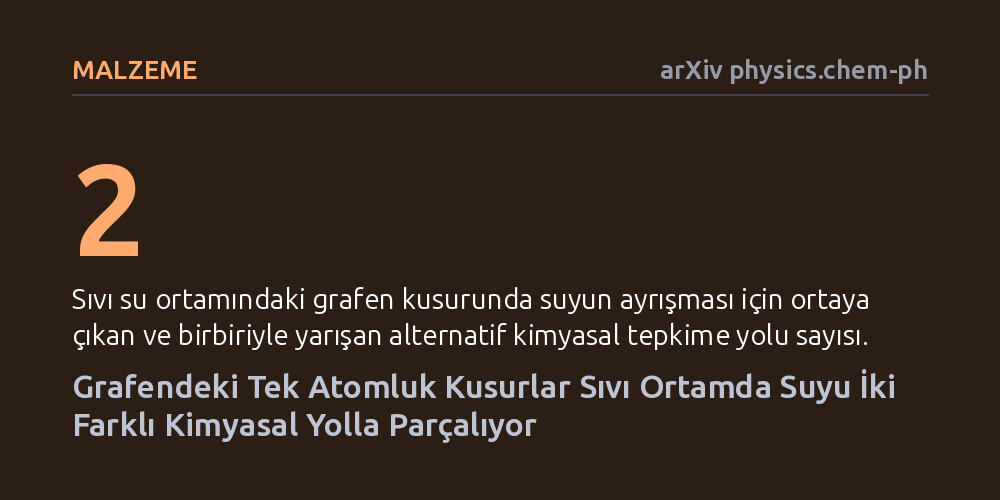

MALZEME · arXiv physics.chem-ph · 2026-09-12
Araştırmacılar, grafen yüzeyindeki tek atomluk boşlukların sıvı ortamda suyu nasıl parçaladığını yapay zekâ destekli simülasyonlarla inceledi. Sıvı suyun tepkime mekanizmasını değiştirerek gaz fazında görülmeyen iki yarışan asidik ve bazik ayrışma yolu açtığı tespit edildi.
Grafen kusurlarının sıvı ortamda suyu beklenenden çok daha kolay ayrıştırabilmesi, hidrojen yakıtı üretiminden nano ölçekli su filtrelerine kadar birçok arayüz teknolojisinin tasarımını değiştirebilir.

Suyun katı yüzeylerle temas ettiğinde bileşenlerine ayrışması; korozyon kontrolü, kimyasal katalizörler, piller ve güneş enerjisi gibi pek çok alanın merkezinde yer alır. İki boyutlu karbon tabakası olan grafen üzerindeki atomik kusurların da bu ayrışmayı tetikleyen aktif bölgeler olduğu uzun süredir biliniyordu.
Ancak daha önceki teorik çalışmalar, çoğunlukla tek bir su molekülünün gaz ortamındaki davranışına odaklanmıştı. Gerçek uygulamalarda ise yüzey tamamen sıvı suyla kaplıdır. Çevreleyen su moleküllerinin (çözücü ortamının) bu kusurlu bölgelerdeki kimyasal tepkimeleri nasıl yönlendirdiği bugüne kadar net olarak aydınlatılamamıştı.
Kusurlu bir yüzeyle sıvı su arasındaki dinamik etkileşimleri klasik kuantum kimyasal yöntemlerle simüle etmek muazzam bir hesaplama gücü gerektirir. Yazarlar bu engeli aşmak için son teknoloji makine öğrenimli atomlararası potansiyellerden yararlandı.
Bu yöntem sayesinde sistem, kuantum mekaniği hassasiyetini korurken binlerce atomun etkileşimini yeterli süre boyunca izleyebildi. Araştırmacılar, grafen katmanında tek bir karbon atomunun eksik olduğu "tekil boşluk" (single vacancy) kusurunu ve bu kusuru çevreleyen sıvı suyu eşzamanlı olarak modelledi.
Simülasyon sonuçları, sıvı su ortamının tepkime mekanizmasını kökten değiştirdiğini gösterdi. Gaz fazında tek bir su molekülü grafen kusurunda tek ve zorlu bir aşamada parçalanırken, sıvı ortamda enerji bariyeri çok daha düşük iki alternatif yol ortaya çıkıyor.
Bu yollardan ilki bazik bir rota izleyerek kusur bölgesine hidrojen bağlarken sıvıya hidroksit iyonu (OH-) salıyor. İkincisi ise asidik bir rota üzerinden kusura hidroksil bağlayıp suya hidronyum iyonu (H3O+) veriyor. Birbiriyle yarışan bu iki kanal, suyun ayrışmasını belirgin şekilde kolaylaştırıyor.
Ayrışma sonrasında grafen yüzeyindeki kusurlu bölgelere bağlanan yeni kimyasal gruplar, karbon tabakası ile su arasındaki etkileşimi güçlendirerek yüzeyin ıslanabilirliğini artırıyor. En basit karbon boşluğu dahi arayüzde yerel elektriksel yükler ve zengin bir kimyasal hareketlilik oluşturuyor.
Bu bulgular, karbon nanotüpler veya grafen zarlar üzerinden geliştirilen nanoakışkan filtrelerin geçirgenliğini ve karbon malzemelerin kimyasal olarak işlenme süreçlerini doğrudan etkileyebilecek niteliktedir.